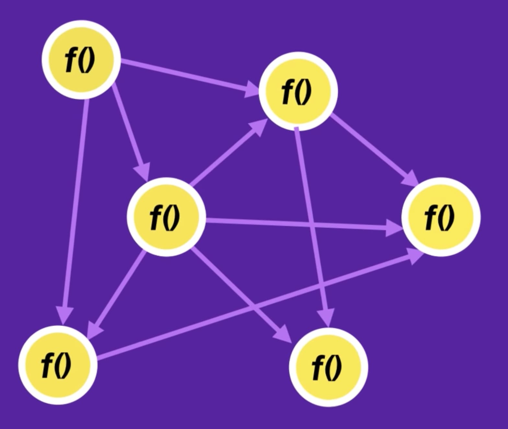
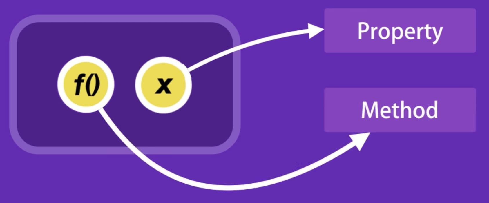

Moduł5 - Zajęcia 10 - Prototypy i klasy
Programowanie obiektowe
Programowanie proceduralne - to takie, gdzie nasz kod jest zestawem
niepowiązanych ze sobą funkcji i zmiennych do przechowywania i
przetwarzania informacji. Takie podejście jest proste i
nieskomplikowane oraz nadaje się do zadań, w których nie ma ściśle
powiązanych ze sobą podmiotów (danych i funkcji dla ich
przetwarzania).

Rozważmy przykład kodu proceduralnego, w którym występują zmienne i
funkcja do obliczenia wyniku.
const baseSalary = 30000;
const overtime = 10;
const rate = 20;
const getWage = (baseSalary, overtime, rate) => {
return baseSalary + overtime * rate;
};
getWage(baseSalary, overtime, rate); // 30200
Programowanie obiektowe (Object Oriented Programming - OOP) to
metodologia oparta na reprezentacji programu jako zbioru obiektów, z
których każdy zawiera dane (właściwości) i metody do interakcji z
nimi.

Użyjmy OOP, do zebrania danych do obiektu employee.
const employee = {
baseSalary: 30000,
overtime: 10,
rate: 20,
getWage() {
return this.baseSalary + this.overtime * this.rate;
},
};
employee.getWage(); // 30200
Dzięki takiemu podejściu metoda nie ma parametrów, wykorzystywane są
właściwości obiektu, które są ustawiane podczas tworzenia obiektu i
ewentualnie zmienione przez inne metody. Na wyjściu otrzymujemy
obiekt z prostym interfejsem, który obniża złożoność programu i
ułatwia operacje na nim.
Ideologicznie OOP to podejście do programowania jak do modelowania
danych, które rozwiązuje główny problem - strukturyzację informacji
z punktu widzenia zarządzania, co znacznie poprawia kontrolę procesu
modelowania.
Terminy związane z OOP
Wyobraź sobie, że projektujemy uproszczony platoński samochód
samochód. Będzie miał silnik, cztery koła, zbiornik paliwa itp.
Samochód musi być w stanie ruszać, nabierać prędkości i zwalniać.
Wiemy, jak współdziałają silnik i koła, to znaczy, według jakich
zasad oddziałują na siebie różne części samochodu.
Klasa
Opisujemy wszystkie części, z których składa się samochód, jak te
części współdziałają ze sobą i co musi zrobić kierowca, aby samochód
zahamował, włączyły się reflektory i nie tylko. Efektem naszej pracy
będzie swego rodzaju szkic (szablon, schemat). W ten sposób
opracujemy to, co w OOP nazywamy klasą.
Klasa to sposób opisania encji (jednostki), określający stan i
zachowania zależne od tego stanu, a także zasady interakcji z daną
encją.
W naszym przypadku klasa opisuje podmiot (encję) - samochód.
Właściwościami klasy będą silnik, koła, reflektory itp. Metody klasy
będą polegały na otwarciu drzwi, uruchomieniu silnika, zwiększeniu
prędkości itp.
Obiekt
Zaprojektowaliśmy szablon w postaci klasy i samochody, które na jego
podstawie opracowaliśmy, zjeżdżają z linii montażowej. Każdy z nich
jest przedstawicielem naszego szkicu, wszystkie systemy
współdziałają dokładnie tak, jak zaprojektowaliśmy, ale każdy
samochody jest wyjątkowy. Wszystkie mają na przykład swój własny
unikalny numer nadwozia i silnika, samochody różnią się kolorem,
wykończeniem wnętrza. Te samochody są instancjami naszej klasy czyli
właśnie obiektami.
Obiekt (instancja) jest oddzielnym przedstawicielem klasy o
określonym stanie i zachowaniu, które są całkowicie zdefiniowane
przez klasę. To jest tworzone według rysunku, czyli według opisu z
klasy.
Mówiąc prościej, obiekt ma określone wartości dla właściwości i
metody, które działają z tymi właściwościami na podstawie reguł
określonych w klasie. W tym przykładzie, jeśli klasą jest jakiś
abstrakcyjny samochód na rysunku, to obiektem jest konkretny
samochód stojący pod naszymi oknami.
Interfejs
Kiedy zbliżamy się do ekspresu do kawy lub prowadzimy samochód,
istnieje zestaw elementów sterujących, z którymi możemy wchodzić w
interakcje.
Interfejs to właśnie zestaw właściwości i metod klasy, które są
dostępne do użycia podczas pracy z instancją (obiektem).
Interfejs opisuje klasę, jasno definiując wszystkie możliwe
działania na niej. Dobrym przykładem interfejsu jest deska
rozdzielcza samochodu, która pozwala wywoływać metody takie jak
zwiększenie prędkości, hamowanie, skręcanie, zmiana biegów,
włączanie reflektorów itp.
Opisując interfejs klasy, bardzo ważne jest zachowanie równowagi
między elastycznością a prostotą. Klasa z prostym interfejsem będzie
łatwa w obsłudze, ale pojawią się problemy, których nie będziemy w
stanie za jego pomocą rozwiązać.
Jeśli interfejs jest elastyczny, to najprawdopodobniej będzie
składał się z dość skomplikowanych metod o dużej liczbie parametrów,
które pozwolą Ci wiele zrobić, ale jego użytkowanie będzie obarczone
większą trudnościami i ryzykiem popełnienia błędu.
Dziedziczenie prototypowe
OOP w JavaScript jest zbudowane na dziedziczeniu prototypowym.
Obiekty można łączyć w łańcuch dziedziczenia, żeby właściwość, która
nie została znaleziona w jednym obiekcie, była automatycznie
wyszukiwana w innym. Właściwością łączącą obiekty jest specjalna
ukryta właściwość [[Prototype]], która jest wyświetlana w konsoli
przeglądarki jako __proto__.
Prototyp obiektu
Metoda Object.create(obj) tworzy i zwraca nowy obiekt, łącząc go z
obiektem obj.
const animal = {
legs: 4,
};
const dog = Object.create(animal);
dog.name = "Mango";
console.log(dog);// { name: 'Mango', __proto__: animal }
console.log(animal.isPrototypeOf(dog));// true
Obiekt, do którego odwołuje się link w __proto__, nazywa się właśnie
prototypem. W naszym przykładzie obiekt animal jest prototypem
obiektu dog. Metoda isPrototypeOf() sprawdza, czy obiekt animal jest
prototypem dog i zwraca true lub false.
Zobaczmy poniżej jak możemy dostać się do właściwości obiektu i
sprawdzić, czy należy ona do obiektu czy pochodzi z prototypu
console.log(dog.hasOwnProperty("name"));// true
console.log(dog.name);// 'Mango'
console.log(dog.hasOwnProperty("legs"));// false
console.log(dog.legs);// 4
Wywołanie dog.name działa w oczywisty sposób - zwraca własną
właściwość name obiektu dog. Podczas wywoływania dog.legs
interpreter szuka właściwości legs w obiekcie dog, nie znajduje i
kontynuuje wyszukiwanie w obiekcie przez link z dog.__proto__, czyli
w tym przypadku, w obiekcie animal - jego prototypie.
Oznacza to, że prototyp jest zapasowym magazynem właściwości i metod
obiektów, który jest automatycznie używany podczas próby dostępu do
nich. Obiekt, który działa jako prototyp, może mieć również swój
własny prototyp i tak dalej.
Właściwość jest przeszukiwana do pierwszego dopasowania. Interpreter
szuka w obiekcie właściwości po nazwie, jeśli jej nie znajduje, to
odwołuje się do właściwości __proto__, tj. podąża za linkiem do
obiektu prototypu, a następnie do prototypu prototypu. Jeśli
interpreter dotrze do końca łańcucha i nie znajdzie właściwości o
tej samej nazwie, zwróci undefined.
W specyfikacji właściwość __proto__ jest oznaczona jako
[[Prototype]]. Ważne są tu podwójne nawiasy kwadratowe, które
wskazują, że jest to właściwość wewnętrzna, usługowa.
Metoda hasOwnProperty()
Teraz, gdy dowiedzieliśmy się, jak odbywa się poszukiwanie
właściwości obiektu, powinno być dla nas bardziej jasne, dlaczego
pętla for...in nie rozróżnia właściwości obiektu od właściwości jego
prototypu.
const animal = { eats: true };
const dog = Object.create(animal);
dog.barks = true;
for (const key in dog) {
console.log(key);// barks, eats
}
Z tego powodu używamy metody obj.hasOwnProperty(prop), która zwraca
true, jeśli właściwość prop należy do samego obiektu obj a nie do
jego prototypu, w przeciwnym razie zwróci ona false.
const animal = {
eats: true,
};
const dog = Object.create(animal);
dog.barks = true;
for (const key in dog) {
if (!dog.hasOwnProperty(key)) continue;
console.log(key);// barks
}
Metoda Object.keys(obj) zwróci tablicę wyłącznie własnych kluczy
obiektu obj, a więc w praktyce jest używana zamiast for...in bo
zwyczajnie jest wygodniejsza i czystsza.
const animal = {
eats: true,
};
const dog = Object.create(animal);
dog.barks = true;
const dogKeys = Object.keys(dog);
console.log(dogKeys);// ['barks']
Klasy
Składnia literału obiektowego umożliwia utworzenie pojedynczego
obiektu. Ale często trzeba tworzyć wiele obiektów tego samego typu z
tym samym zestawem właściwości, ale różnymi wartościami i metodami
interakcji z nimi. Wszystko to musi być zrobione dynamicznie podczas
wykonywania programu. Aby to zrobić, używane są konstruktory klasy -
specjalna składnia do wywołania funkcji tworzącej obiekt.
Kiedyś korzystało się z prototypów, aby wprowadzić taką
funkcjonalność w naszym programie, na szczęście nowe wersje
JavaScript zapewniają odpowiednie składnie.
Deklaracja klasy
Deklaracja klasy zaczyna się od słowa kluczowego class, po którym
następuje nazwa klasy i nawiasy klamrowe - jej ciało. Klasy są wedle
konwencji nazywane z wielkiej litery, a sama nazwa opisuje rodzaj
tworzonego obiektu (rzeczownik).
class User {
// Ciało klasy
}
const mango = new User();
console.log(mango);// User { __proto__: { constructor: ƒ User() } }
const poly = new User();
console.log(poly);// User { __proto__: { constructor: ƒ User() } }
Wynikiem wywołania new User() jest obiekt o nazwie instancji klasy,
ponieważ zawiera dane i zachowanie opisane przez klasę.
Sposób budowania klasy, właściwości i metody zależą od tego, czego
potrzebujesz. W naszym przypadku klasa reprezentuje użytkownika,
więc dodamy tam pola na imię i adres e-mail.
Konstruktor klasy
Podczas inicjalizacji instancji, klasa wykona metodę constructor.
Jeśli nie jest ona zadeklarowana, tworzony jest domyślny konstruktor
— pusta funkcja, która nie wykonuje żadnych instrukcji.
class User {
// Składnia deklarowania metody klasy
constructor(name, email) {
// Inicjalizacja właściwości instancji
this.name = name;
this.email = email;
}
}
const mango = new User("Mango", "mango@mail.com");
console.log(mango);// User { name: 'Mango', email: 'mango@mail.com' }
const poly = new User("Poly", "poly@mail.com");
console.log(poly);// User { name: 'Poly', email: 'poly@mail.com' }
Wywołanie klasy z operatorem new tworzy nowy obiekt i wywołuje
konstruktor w kontekście tego obiektu. Oznacza to, że this wewnątrz
konstruktora będzie odnosić się do utworzonego obiektu. Pozwala to
na dodanie właściwości do każdego obiektu o tej samej nazwie, ale
różnych wartościach.
Właściwości name i email nazywane są właściwościami publicznymi,
ponieważ będą one własnymi właściwościami obiektu instancji i można
do nich uzyskać dostęp za pomocą kropki
Obiekt parametru
Klasa może przyjąć dużą ilość danych wejściowych jako właściwości
przyszłego obiektu. W związku z tym można również zastosować do nich
wzorzec "Obiekt parametru", przekazując pojedynczy obiekt z
logicznie nazwanymi właściwościami zamiast niepowiązanego zestawu
argumentów.
class User {
// Destrukturyzacja obiektu
constructor({ name, email }) {
this.name = name;
this.email = email;
}
}
const mango = new User({
name: "Mango",
email: "mango@mail.com",
});
console.log(mango);// User { name: "Mango", email: "mango@mail.com" }
const poly = new User({
name: "Poly",
email: "poly@mail.com",
});
console.log(poly);// User { name: "Poly", email: "poly@mail.com" }
Metody klasowe
Do pracy z właściwościami przyszłej instancji wykorzystywane są
metody klasowe - funkcje, które będą dostępne dla instancji w jej
prototypie.
class User {
constructor({ name, email }) {
this.name = name;
this.email = email;
}
// Metoda getEmail
getEmail() {
return this.email;
}
// Metoda changeEmail
changeEmail(newEmail) {
this.email = newEmail;
}
}
Prywatne właściwości
Enkapsulacja (encapsulation) (inaczej hermetyzacja) to koncepcja
ukrywania prywatnych szczegółów klasy. Użytkownik klasy powinien
mieć dostęp tylko do interfejsu publicznego - zbioru publicznych
właściwości i metod klasowych.
W klasach JavaScript hermetyzacja jest implementowana przez prywatne
właściwości, do których można uzyskać dostęp tylko w obrębie klasy.
Załóżmy, że e-mail użytkownika powinen być niedostępny do
bezpośredniej modyfikacji z zewnątrz, czyli jest prywatny. Dodając
symbol # do nazwy właściwości, czynimy ją prywatną. Wymagane jest
zadeklarowanie właściwości prywatnej przed inicjalizacją w
konstruktorze.
class User {
// Opcjonalna deklaracja właściwości publicznych
name;
// Obowiązkowa deklaracja właściwości prywatnych
#email;
constructor({ name, email }) {
this.name = name;
this.#email = email;
}
getEmail() {
return this.#email;
}
changeEmail(newEmail) {
this.#email = newEmail;
}
}
const mango = new User({
name: "Mango",
email: "mango@mail.com",
});
mango.changeEmail("mango@supermail.com");
console.log(mango.getEmail());// mango@supermail.com
console.log(mango.#email);// Wystąpi błąd, to jest właściwość prywatna
Metody klasowe również mogą być prywatne, to znaczy, że są dostępne
tylko w ciele klasy. Aby to zrobić, poprzedź ich nazwy symbolem #.
Gettery i settery
Gettery i settery to krótsza składnia służąca do deklarowania metod
do interakcji z właściwościami. Getter i setter naśladują normalną
właściwość publiczną klasy, ale umożliwiają zmianę innych
właściwości w wygodniejszy sposób. Getter jest wykonywany podczas
próby uzyskania wartości właściwości, a setter jest wykonywany
podczas próby jej zmiany.
Gettery i settery są dobre do prostych operacji odczytu i zmiany na
właściwościach, zwłaszcza prywatnych.
class User {
#email;
constructor({ name, email }) {
this.name = name;
this.#email = email;
}
// Getter email
get email() {
return this.#email;
}
// Setter email
set email(newEmail) {
this.#email = newEmail;
}
}
Zadeklarowaliśmy getter i setter email, poprzedzając nazwę
właściwości słowami kluczowymi get i set. W ramach tych metod albo
zwracamy wartość właściwości prywatnej #email albo zmieniamy jej
wartość. Getter i setter idą w parze i muszą nazywać się jednakowo.
const mango = new User({ name: "Mango", email: "mango@mail.com" });
console.log(mango.email);// mango@mail.com
mango.email = "mango@supermail.com";
console.log(mango.email);// mango@supermail.com
Podczas uzyskiwania dostępu do mango.email wywoływany jest getter
get email() {...} i wykonywany jest jego kod. Przy próbie napisania
mango.email = "mango@supermail.com" wywoływany jest setter set
email(newEmail) {...}, a ciąg "mango@supermail.com" będzie wartością
parametru newEmail.
Plusem jest to, że są to metody, co oznacza, że podczas ustawienia
lub pobierania wartości można wykonać dodatkowy kod, na przykład z
pewnymi warunkami logicznymi, w przeciwieństwie do wykonywania tej
samej operacji bezpośrednio na właściwości. Zobaczmy przykładowe
zastosowanie:
set email(newEmail) {
if(newEmail === "") {
console.error("Błąd! Poczta nie może być pustym ciągiem!");
return;
}
this.#email = newEmail;
}
Właściwości statyczne
Oprócz publicznych i prywatnych właściwości przyszłej instancji,
klasa może deklarować własne właściwości, które są dostępne tylko w
samej klasie, ale nie w jej instancji - są to właściwości statyczne
(static). Są przydatne do przechowywania informacji związanych z
samą klasą.
Dodajmy prywatną właściwość role do klasy użytkownika - przechowamy
tam informacje o, możliwych rolach użytkownika, np. administrator,
redaktor, zwykły użytkownik itp. Ewentualne role użytkownika
będziemy przechowywać jako statyczną właściwość Roles - obiekt z
właściwościami.
Właściwości statyczne są deklarowane w ciele klasy. Przed nazwą
właściwości musimy dodać słowo kluczowe static
class User {
// Deklaracja i inicjalizacja właściwości statycznej
static Roles = {
ADMIN: "admin",
EDITOR: "editor",
};
#email;
#role;
constructor({ email, role }) {
this.#email = email;
this.#role = role;
}
get role() {
return this.#role;
}
set role(newRole) {
this.#role = newRole;
}
}
const mango = new User({
email: "mango@mail.com",
role: User.Roles.ADMIN,
});
console.log(mango.Roles);// undefined
console.log(User.Roles);// { ADMIN: "admin", EDITOR: "editor" }
console.log(mango.role);// "admin"
mango.role = User.Roles.EDITOR;
console.log(mango.role);// "editor"
Właściwości statyczne mogą być również prywatne, to znaczy, że są
dostępne tylko w obrębie klasy. Aby to zrobić, nazwa właściwości
musi zaczynać się od #, tak jak właściwości prywatne. Próba
uzyskania dostępu do prywatnej właściwości statycznej poza treścią
klasy spowoduje błąd.
Metody statyczne
W klasie można deklarować nie tylko metody przyszłej instancji, ale
także metody dostępne tylko dla klasy - metody statyczne, które mogą
być zarówno publiczne, jak i prywatne. Składnia deklaracji jest
podobna do właściwości statycznych, z tą różnicą, że wartością
będzie metoda.
class User {
static #takenEmails = [];
static isEmailTaken(email) {
return User.#takenEmails.includes(email);
}
#email;
constructor({ email }) {
this.#email = email;
User.#takenEmails.push(email);
}
}
const mango = new User({ email: "mango@mail.com" });
console.log(User.isEmailTaken("poly@mail.com")); // false
console.log(User.isEmailTaken("mango@mail.com")); // true
Osobliwością metod statycznych jest to, że kiedy one są wywoływane,
słowo kluczowe this odnosi się do samej klasy. Oznacza to, że metoda
statyczna może uzyskać dostęp tylko do właściwości statycznych
klasy, ale nie do właściwości instancji. Jest to logiczne, ponieważ
metody statyczne są wywoływane przez samą klasę, a nie jej instancje
(które mogą w ogóle nie istnieć).
Dziedziczenie klas